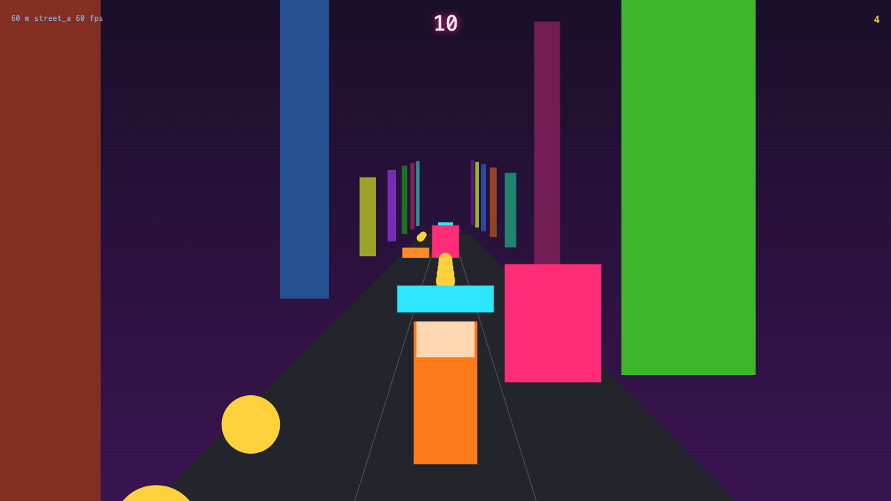
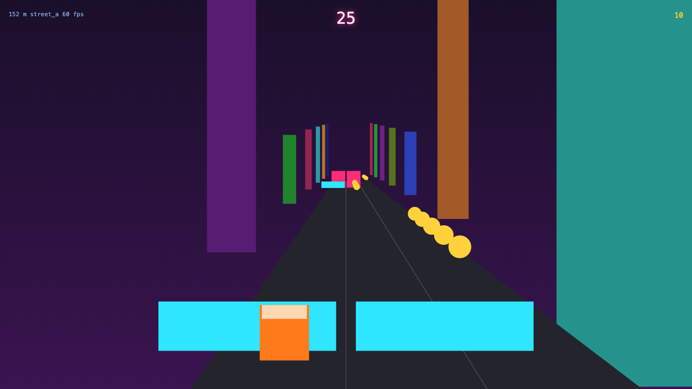
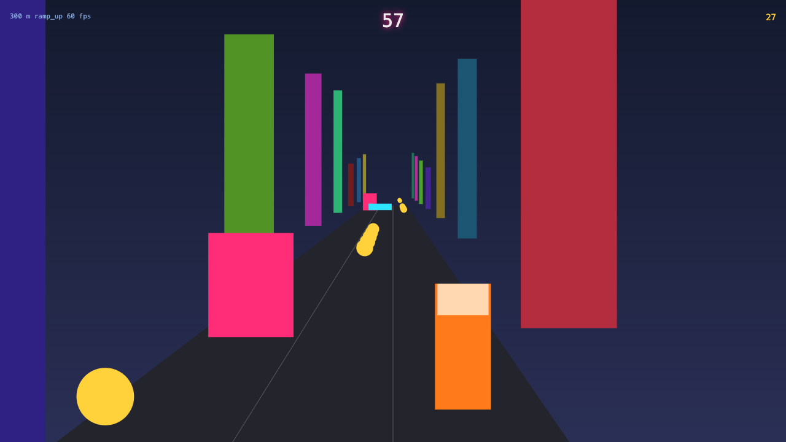
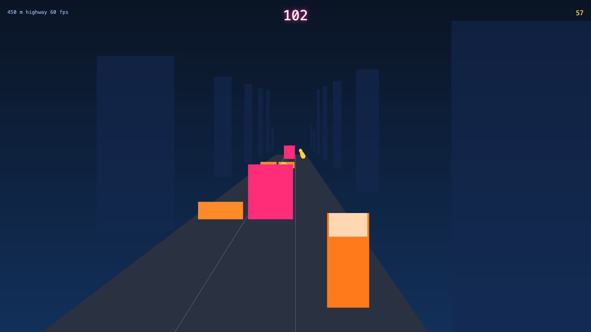
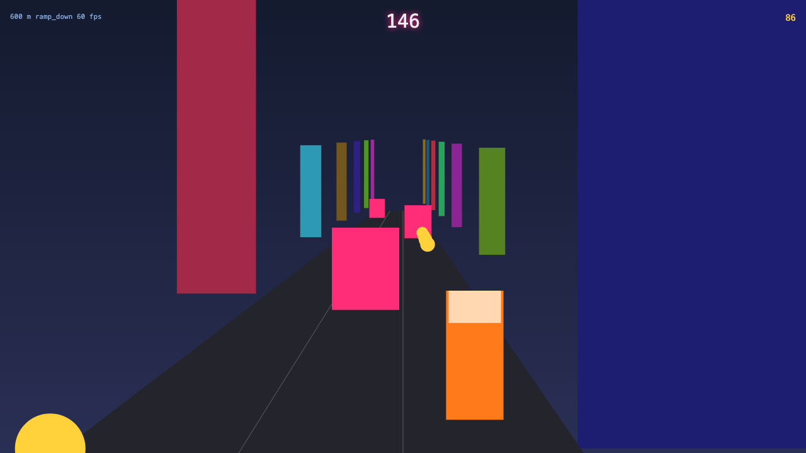
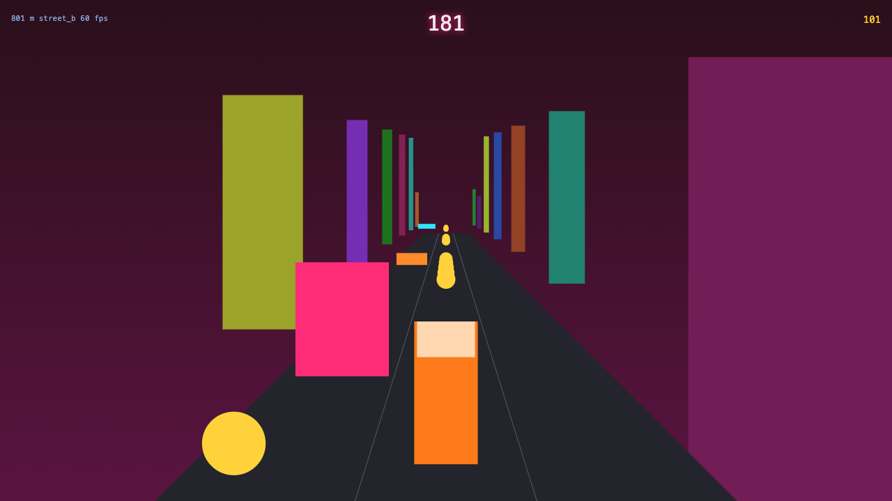

tools/fixtures/fake-runner · 1280x720@1x desktop · seed 7 · run 1 · ANGLE (Apple, ANGLE Metal Renderer: Apple M5, Unspecified Version) · 2026-09-19T15:46:22.251Z

f0 60 m street_a
9 m/s 60 fps
75 draws 192,000 tris hero 29%
f1 152 m street_a
9.6 m/s 60 fps
76 draws 193,200 tris hero 14%
f2 300 m ramp_up
9.6 m/s 60 fps
75 draws 192,000 tris hero 29%
f3 450 m highway
10.8 m/s 60 fps
76 draws 193,200 tris hero 29%
f4 600 m ramp_down
10.8 m/s 60 fps
74 draws 190,800 tris hero 29%
f5 801 m street_b
12 m/s 60 fps
74 draws 190,800 tris hero 29%